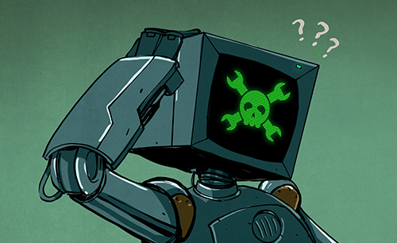
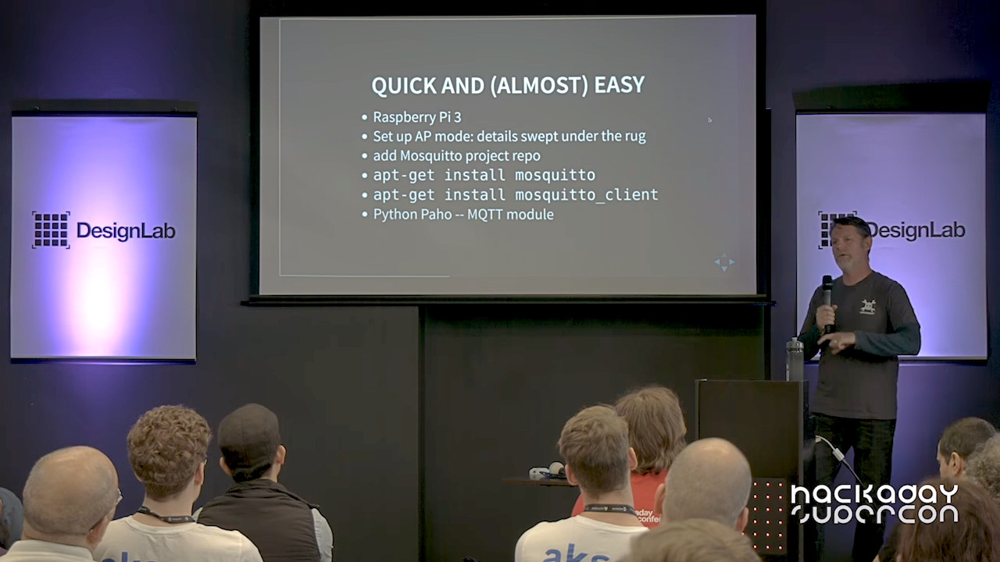

State of the Hackaday
15 Years of Hardware
Mike Szczys
Editor in Chief
Hackaday.com // Hackaday.io
@szczys
What is Hackaday?
“Hackaday is the Common Link in the Collective Brain”
–Elliot Williams
Managing Editor, Hackaday
Great Things Happened in 2019
New Mobile Look!
Hackaday.io app!
https://hackaday.io/project/46/log/164492
Podcast!

43 episodes and counting...

Our Editorial Trajectory
New Column: Week in Security


Hackaday is 15 Years Old
What I think is most incredible is to see how technology has changed in that time.
Living in the Future
import <TimeOfFlight.hardware>
https://hackaday.io/project/100965
Nexus Technologies
https://hackaday.com/?p=385048


Microcosm of What is to Come